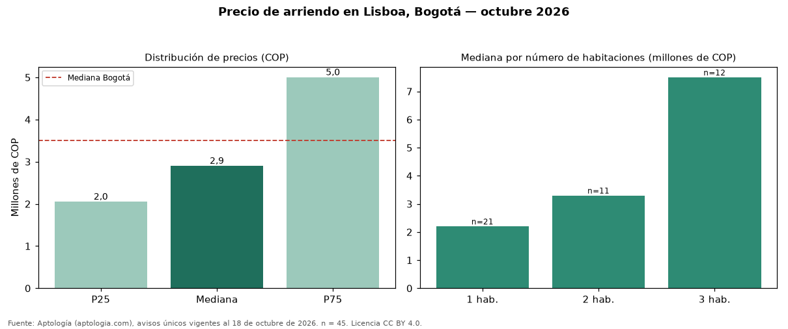

Precio de arriendo en Lisboa, Bogotá — octubre 2026
En Lisboa (localidad de Usaquén), Bogotá, la mediana de canon mensual de vivienda es COP 2.900.000, según 45 avisos únicos vigentes. Frente al total de Bogotá (COP 3.497.000), el barrio está 17 % por debajo. Cruzando con la oferta de venta del mismo barrio, la rentabilidad bruta implícita es de 8,9 % anual (canon por m² × 12 / precio por m²). La dispersión es alta: el cuartil superior (COP 5.000.000) es 2,4 veces el inferior (COP 2.050.000). El segmento con más oferta es el de 1 habitación (21 avisos, mediana COP 2.200.000); pasar de 1 habitación a 2 habitaciones sube la mediana 50 %. Por metro cuadrado, la mediana es COP 51.064/m² (+5 % frente a COP 48.571/m² en Bogotá), puesto 55 de 115 barrios con muestra suficiente. El área mediana anunciada es 61 m² (en Bogotá: 70 m²). Datos abiertos CC BY 4.0 de Aptología; fuente y búsqueda de inmuebles: https://www.aptologia.com/arriendo/bogota/lisboa. Archivos: PDF de 2 páginas, CSV con las cifras y gráfica PNG.

| Avisos únicos | 45 |
|---|---|
| Percentil 25 | COP 2.050.000 |
| Mediana | COP 2.900.000 |
| Percentil 75 | COP 5.000.000 |
| Mediana por m² | COP 51.063 |
Fuente: avisos vigentes de portales inmobiliarios recopilados por Aptología, deduplicados (mínimo 30 avisos únicos por celda). Precios pedidos, no cerrados. Fecha: 2026-10-18.